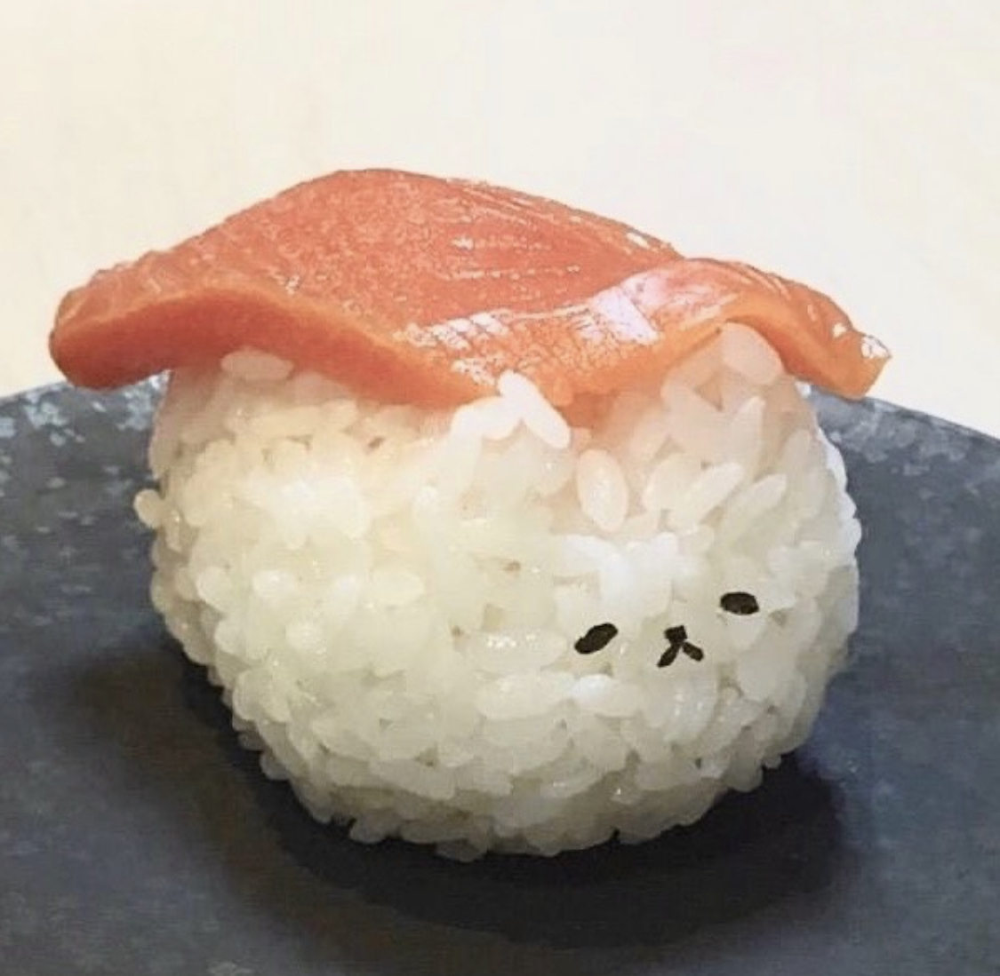

별명은 만주 그리고 만두이고,그렇게 불리는 것을 즐깁니다.
민주보다 만주나 만두가 어감이 귀엽기 때문이죠 ~.~
자신을 소개하는 방법은 다양하지만 누군가의 취향을 알면
그 사람의 다양한 면들을 쉽게 파악하고 추측할 수 있죠.
그래서, 오늘은 제가 좋아하는 것들을 주제별로 소개하면서 제 이야기를 해보려고 합니다.
첫번째로 초밥! 그중에서도 연어, 광어, 계란 초밥이 가장 맛있어요.
두번째는 햄버거! 감자튀김도 좋아합니다.
외에도 칼국수, 다시마, 새우, 마라탕을 좋아하고
과일은
메론, 딸기, 사과, 수박, 참외, 복숭아를 좋아합니다.
신카이마코토 감독의 애니메이션을 좋아합니다.
많은 분들이 알고 계시는
<너의이름은>이 저의 최애 영화입니다.
아직 안 보신 분이 계신다면 꼭 한 번 감상해보시길 추천드려요.
<시간을 달리는 소녀>도 어릴 때부터 좋아하는 영화 중 하나인데요,
저는 편안하게 볼 수 있는 잔잔한 분위기의 애니메이션을 좋아해요.
취향이 확고해 보일 수 있지만 사실 장르 가리지 않고 대부분 재밌게 본답니다.
최근 영화관에서 본 <스파이더맨 노웨이홈>도 재밌었어요.
사진이나 영상 찍고 편집하기 입니다. 아카이빙하는 것도 좋아하고 카메라와 사진 자체를 좋아합니다.
핀터레스트로 귀여운 동물 사진이나 재미있는 짤들을 찾아보다보면
어느 때 보다 시간이 빨리 흘러서
당황스러울 때가 많아요.
핀터레스트에서 가장 최근에 저장한 사진 공유합니다!
일본에서 판매하는 푸딩 같은데, 정말 귀엽지 않나요?
제가 찍은 사진은 인스타그램에서 보실 수 있어요
만화책이나 소설책 읽는 것도 좋아해요.
사실 귀찮음이 많은 성격이라 자주 읽지는 않아요
대신 한 번 읽으면 오래 보는 편입니다.
그리고 오래된 취미는 아니지만 기타 연주가 하고 싶어서
이번 겨울 방학부터
검정치마의 <나랑아니면>을 열심히 연습하고 있어요.
지금껏 해보지 않은 새로운 취미에 도전하는 건 정말 보람찬 일인 것 같아요.
글을 쓰기 시작할 때는 제가 무엇을 좋아하는지 떠오르지 않아 막막했다면
지금은 너무 많아서 이 글에 다 담을 수 없겠다는 생각이 들어요.
저는 이런 사람입니다! 그럼 안녕! 행복하세요~.~